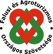

Napraforgós Nemzeti Tanúsító Védjegy célja
A falusi szálláshelyek napraforgós Nemzeti Tanúsító Védjegye a FATOSZ által több mint tíz éve létrehozott, és működtetett minősítési rendszer alapjaira épülve 2011 óta a minőségi falusi turizmus szimbóluma. A védjegy alapvető célja, hogy – összhangban az egyes szálláshelyek működtetéséről szóló 239/2009. Korm. rendeletben foglaltakkal – garanciát nyújtson a szálláshely szolgáltatás minőségének megfelelő színvonalára. A falusi vendégházak 1-4 napraforgós besorolást nyerhetnek el a külső, belső megjelenés, a felszereltség, a szolgáltatások színvonala, valamint a szállásadó személyes felkészültségének, szakmai képzettségének függvényében.
Tájékoztató oldal

Falusi szálláshely fajtái
Vendégszoba: a vendégek rendelkezésére bocsátható önálló lakóegység, amely egy lakóhelyiségből, és a minősítéstől függően a hozzátartozó mellékhelyiségekből áll.
Lakrész: önálló épület kettő, illetve több szobából álló lehatárolt része a minősítéstől függően hozzátartozó mellékhelyiségekkel együtt
Vendégház: önálló épület, több szobával, mellékhelyiségekkel és főzési lehetőséggel rendelkező lakó-, illetve üdülőegység, családok vagy kisebb csoportok elszállásolására.
Sátorozóhely: csak valamelyik falusi szálláshely típus mellett, mintegy azt kiegészítve üzemeltethető az előírt feltételek megléte esetén. Pl.: falusi vendégház sátorozóhellyel.
A hét törpe fogadó
Ruhásszekrény
Saját fürdőszoba zuhanytálca
WC (fürdőszobával egyben)